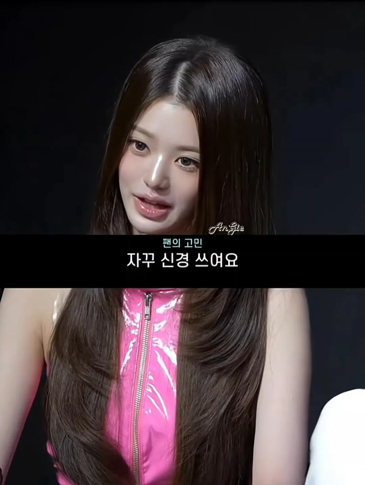
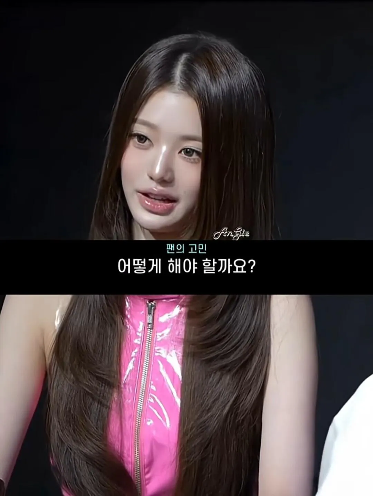
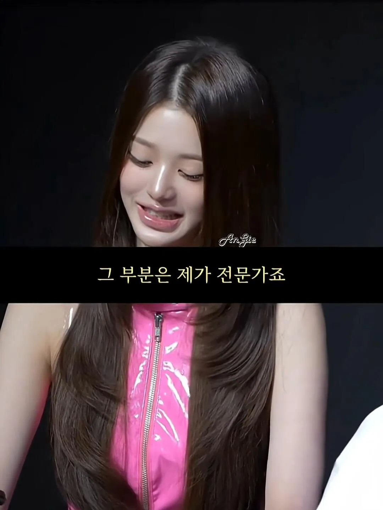
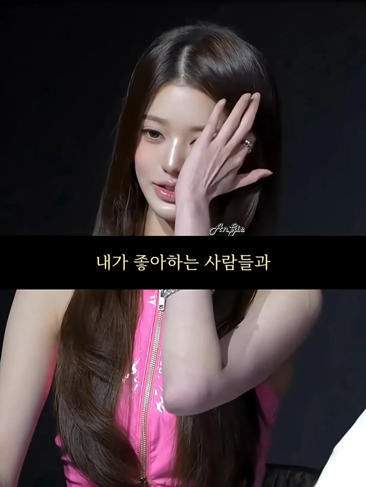

장원영은 나중에 부업으로 멘탈코치나, 심리상담가해도 잘할거 같음.




장원영은 나중에 부업으로 멘탈코치나, 심리상담가해도 잘할거 같음.
장원영이 개붕이의 못된 말에 신경쓰지 않을 것 같아서 다행..
ㅋㅋㅋ
ㅋㅋㅋㅋㅋㅋ

악질이넼ㅋㅋㅋㅋ
장원영 집중 많이하겠다 ㅋㅋㅋ
너무 집중해서 사이오닉스톰쓸듯
님말 신경안쓴데요

쓰레기는 쓰레기통에 담아라
그냥 장원영 멘탈이 탈인간급 멘탈임
ㄹㅇ 원영적 마인드
그 부분은 제가 전문가죠(진짜임)
죄를 짓지도 않았는데 전문가임
내가 좋아하는 사람이 나를 싫어한다면요...?

비참하겠군요.
유료 팬미팅에 오시면 대답해드립니다.
ㅋㅋㅋㅋㅋㅋ 유료팬미팅에 ㅋㅋㅋ
님이 싫어하는 사람한테 집중하세요.
그리고 걔가 님보면 꼴린다고 생각해보세요
이럴 수가
나를 좋아해주는 사람과 사랑해주는 사람이 없어요
토미에상 카리나랑 자웅다투네
현명하네
야리끼리 팁도 알려주세요
알겠습니다 장원영씨 말에 집중할게요
겉은 저래도 산전수전 다겪은 주임원사님 이랄까..
원영양 사랑하오
원영양 참으로 곱소
원영양,, 당신를.사모.하고 있소,,
원영양,, 아름답구려,,,
저것보단 최화정 대답이 더 몬가 와닿더라
최화하하하
마인드가 남다르네 그냥 얼굴만 이쁘장한게 아니라 마음씨가 더 고운 사람이었네
확신의 내 아내상^^